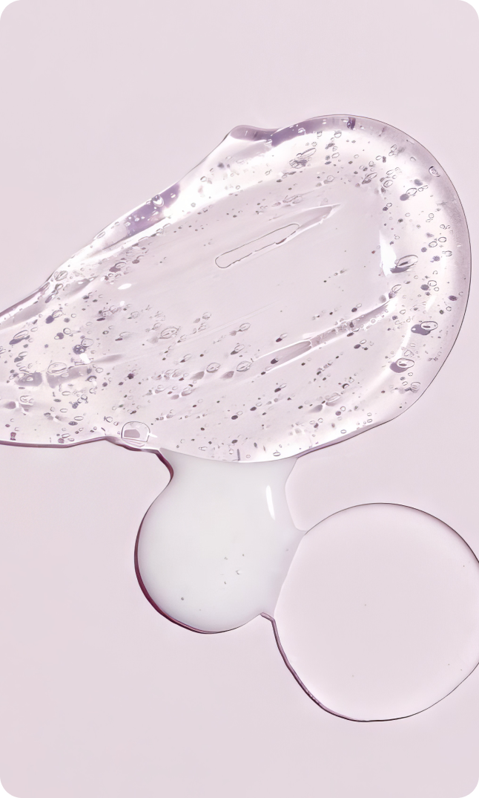
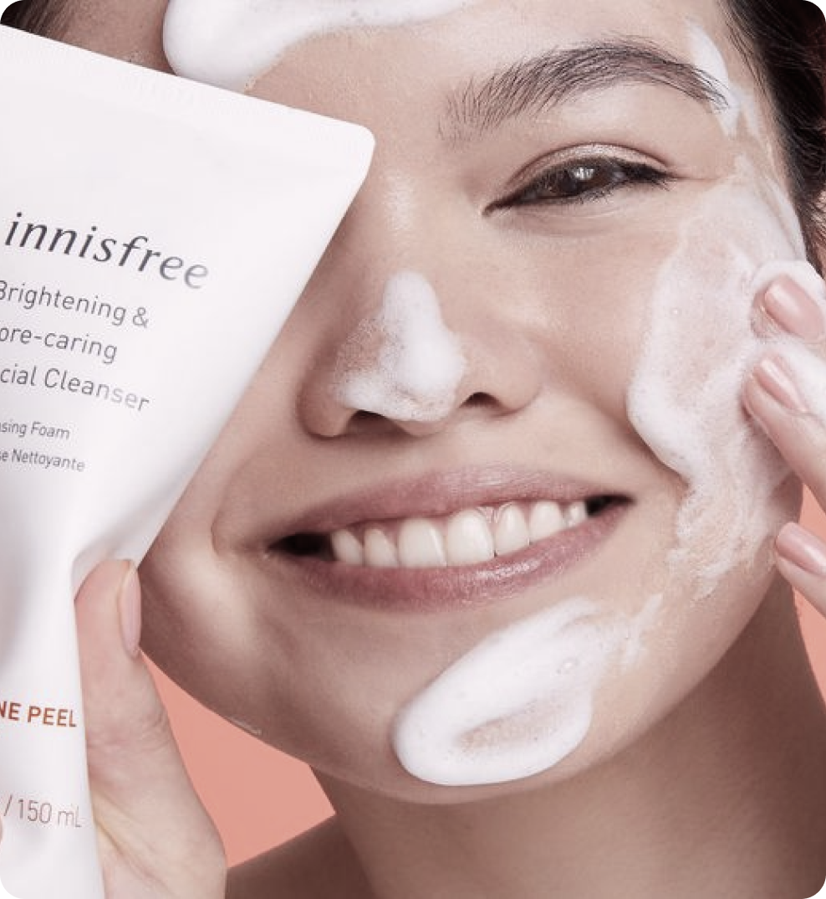

23 марта 2024
средства
Гель для умывания - это один из основных средств в уходовой косметике, предназначенных для очищения кожи лица. Они обладают легкой текстурой, хорошо пенятся и эффективно удаляют загрязнения, макияж и излишки кожного жира. Предлагаем разобраться, когда стоит использовать гель для умывания и чем гели отличаются от пенок.
Описание
Гель для умывания — это очищающее средство с приятной желеобразной текстурой. Гели помогают удалить макияж и другие загрязнения с кожи, подготваливая ее к дальнейшему уходу. В состав гелей входят поверхностно активные вещества, за счет которых образуется пена и достигается очищающий эффект. Для того, чтобы смягчить агрессивное действие ПАВ, в состав как правило добавляется вода и много натуральных компонентов, таких как глицерин и фруктовые кислоты. Важно отметить, что в состав геля для умывания не должны входить масла и жиры.
Главными конкурентами гелей для умывания считаются пенки. Какое из двух средств лучше выбрать зависит от типа кожи и индивидуальных особенностей, однако стоит учитывать, что содержание ПАВ в гелях — около 20%, а в пенках — только 5%. Благодаря этому пенка легче наносится и смывается и в целом мягче действует на кожу, чем гель.
 
Применение
Гель для умывания можно использовать как самостоятельное очищающее средство или вместе с гидрофильным маслом. Поскольку концентрация ПАВ в составе достаточно высока, стоит тщательно смыть нанесенный гель теплой водой. Использовать гели можно 1-2 раза в день во время утреннего или вечернего умывания.
Для сухой кожи в качестве очищающего средства рекомендуется использовать пенки, поскольку они не будут лишний раз раздражать и сушить кожу.
Гели очень хорошо подойдут для жирной и комбинированной кожи, поскольку эти типы нуждаются в интенсивном очищении. Хорошим эффектом будут обладать средства с термоэффектом, который способствует лучшему усвоению полезных компонентов.
Чувствительной коже, так же, как и сухой, лучше подойдут более мягкие средства, такие как пенки. Не забудьте хорошо увлажнить кожу после умывания!